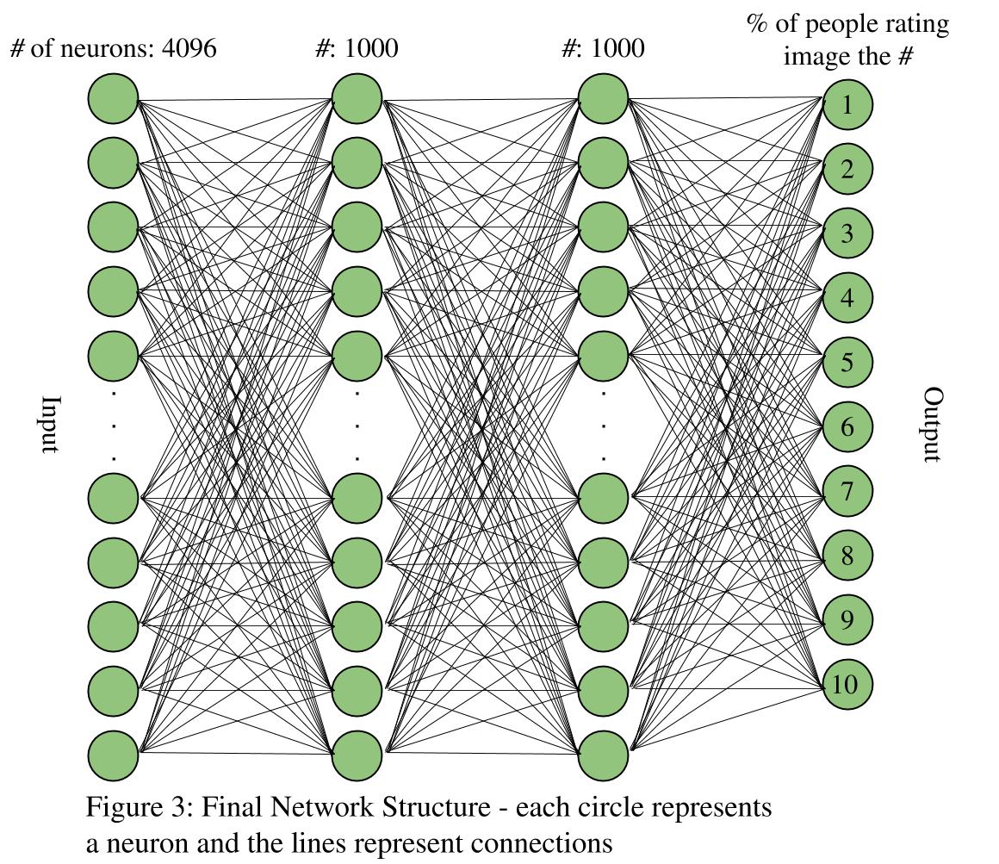
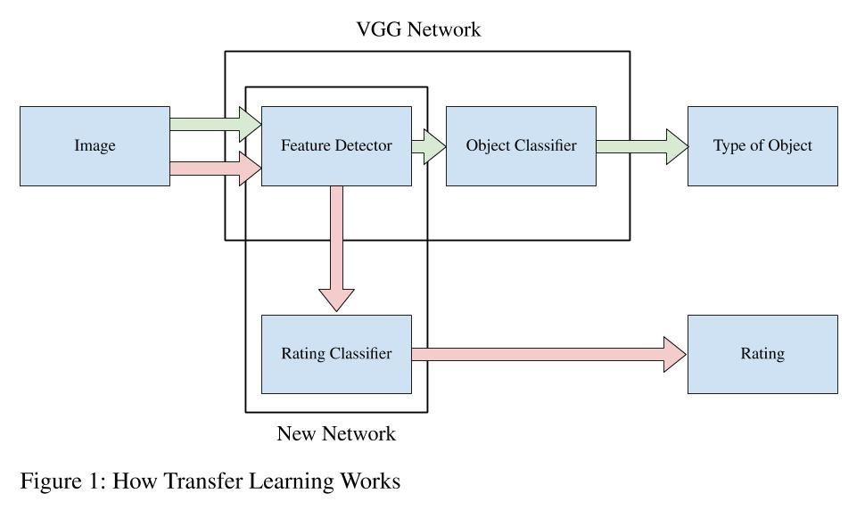

Image Rating Neural Network
An image rater based on the average person's judgement
Overview
This is a Python program I made that builds and trains a neural network which assigns aesthetic quality scores to images. The scores are based on what the average person would say. It is trained on images from the AVA (Aesthetic Visual Analysis) dataset, available here.
Uses Jupyter Notebook. Download pdf version of notebook here.

Usage
Download pdf version of Jupyter notebook file here.
Get the code (an ipynb file): https://github.com/rmboyce/image_rater
The ipynb is a file you can run on your computer using Jupyter Notebook. If you run the notebook, you will need the AVA dataset on your local computer. Note the hardcoded location ("E:/AVA_dataset") in the python code.

Technical Details
The image rater first uses the VGG19 network to convert images from the AVA dataset into codes, then runs the codes through a fully-connected network with two hidden layers to return image ratings (see figure 1 above). The rating for an image is in the form of a probability distribution over the integers from 1 (lowest quality) to 10 (highest quality).
The network achieves a correlation coefficient of 0.52 between the predicted and actual ratings for a validation set of images. Additionally, I do a factor analysis to determine which VGG19 codes have the largest effect on image quality. The notebook includes functions to show a selection of images with high values of any VGG19 code.